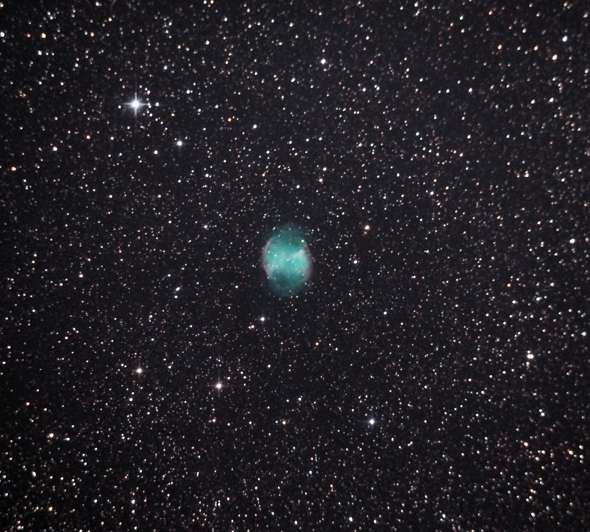
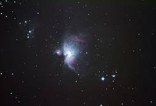

alexpn
Home
Projects
German Equatorial Mount (Hardware)
FPGA Edge Detection
Guides & Tutorials
Getting Started in Astronomy
Comparison of Telescope Types
JS/CSS Syntax Highlighting
Contact
Gallery
×
❮
❯

Dumbbell Nebula (M27)
A small planetary nebula that is a great target for amateur astronomers. Also a prime candidate for narrowband imaging.

Orion Nebula (M42)
One of the brightest nebulae in our galaxy. It is even visible without any visual aid on clear nights.
Jupiter
Taken through a 152mm f/4 Newtonian with ASI120mm
Hoverfly on Flower
Taken near Glacier View, AK with Canon 100mm f/2.8 USM